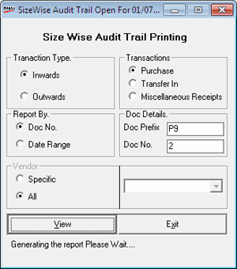
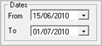
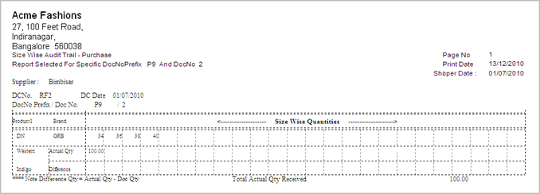

This option generates the Audit Trail Size-wise report based on selected Transaction type, Date Range or Document number, etc., as specified. The report can be generated both for Goods Outwards and Goods Inwards.
This option also generates the Goods Inward and Goods Outward audit trail, wherein the quantity is listed size-wise in a columnar fashion. Audit trail can be printed for the transaction types namely Purchase, Transfer In, Miscellaneous Receipt, Purchase Return, Transfer Out and Miscellaneous Issues.
How to reach: Stock > Audit Trail – Size-wise
The Size-wise Audit Trail Printing window is displayed as shown.

Transaction Type: Select Inwards to print the report for a goods inwards document and select Outwards for a goods outwards document.
Transactions: Select the required value.
Note: Selecting Inwards as the transaction type, the options available are Purchase, Transfer In and Miscellaneous Receipts and by selecting Outwards as the transaction type, the options Purchase Return, Transfer Out and Miscellaneous Issues are displayed.
Report By: Select the criteria for report generation. Select Doc No. to generate report based on transaction's document number or select Date Range to generate report based on date wise transaction.
Doc Details: Enter Doc Prefix and Doc No. if the option Doc No. is selected. Enter From and To dates, if the Date Range is selected.

Vendor: Select All or Specific to generate report containing transactions related to all the vendors or a particular vendor. You will have to select the required vendor for the option Specific.
Note: Vendor option is activated only if the Date Range option under Report By is selected.
A sample report is displayed.
